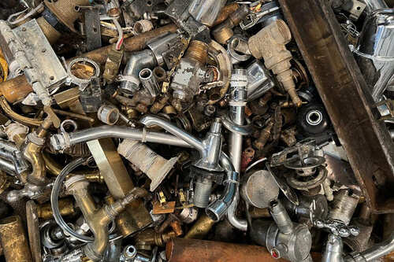
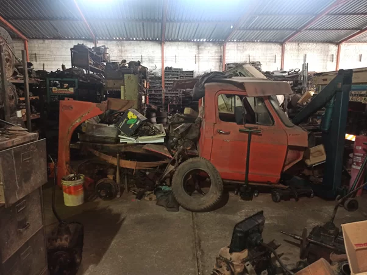
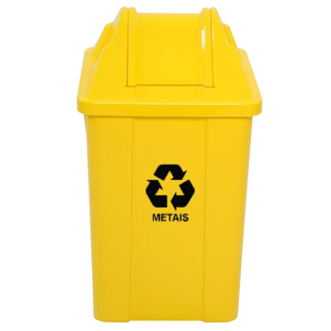

Reciclagem de Metais
A reciclagem de metais é essencial para economizar recursos naturais e reduzir a poluição. É possível reciclar diversos tipos de metais, como alumínio e aço.
Processo de Reciclagem
- Coleta e separação dos metais
- Limpeza e retirada de impurezas
- Trituração e compactação
- Fusão em altas temperaturas
- Criação de novas peças metálicas
Recicláveis
- Latinhas de alumínio (refrigerantes, cervejas)
- Latas de aço (alimentos enlatados)
- Arames e ferragens
- Panelas sem cabo de plástico
- Pedaços de ferro, cobre, alumínio e zinco
Não Recicláveis
- Panelas com revestimento antiaderente
- Latas de aerossol com restos de produto
- Objetos metálicos contaminados (óleo, tinta)
- Cabos de metal com componentes eletrônicos
- Metais misturados com plástico
Dicas Práticas

Limpeza
Lave as latas e utensílios para remover restos de alimentos ou bebidas antes de descartar.

Armazenamento
Armazene os metais em locais secos e organizados até o dia da coleta seletiva.

Descarte Correto
Utilize postos de reciclagem ou cooperativas que aceitem metais, garantindo a destinação correta.
Impacto Ambiental
A reciclagem de metais influencia diretamente o meio ambiente, ajudando a reduzir danos ambientais causados pela extração e descarte incorreto de resíduos metálicos.
- Evita a extração excessiva de minérios, preservando ecossistemas
- Reduz emissões de gases poluentes no processo industrial
- Diminui o volume de resíduos metálicos em aterros sanitários
- Ajuda a conter a contaminação do solo e da água por metais pesados